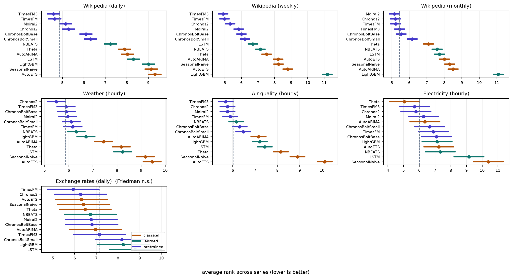

Figure 1 : (a) The accuracy-best strategy varies across the full VTC-Bench Group A and reduction ratios, with no strategy winning more than half of the 40 benchmark-ratio settings....
轻量路由器基于视觉与文本特征在多个现成剪枝器和全量路径间选择，无需修改骨干或剪枝算法。
阅读时需要把方法设计与主要结果一起看：在 VTC-Bench Group A 各压缩率均超过最佳固定策略，平均准确率相对提高 26.9%，计入 Token 成本的平均效用相对提高 22.0%；参数仅为骨干的 0.017%。
实验结果
在 VTC-Bench Group A 各压缩率均超过最佳固定策略，平均准确率相对提高 26.9%，计入 Token 成本的平均效用相对提高 22.0%；参数仅为骨干的 0.017%。
使用晚于模型发布的数据是否足以消除预训练熟悉度优势？
对当前主题的关键意义在于：在 EAST 数据上同时设置同装置晚时间、跨装置同诊断、跨装置异诊断三套测试，分解模型收益来源并报告置信区间。
方法与关键创新

Figure 1: Average rank with Nemenyi intervals, per group. Any model whose interval crosses the dashed line is statistically indistinguishable from the best model in that panel. Exc...
Figure 3 : Overview of the visual feature extraction. Speaker face crops are obtained from T = 16 T=16 frames per utterance, then encoded as a combined representation of appearance...
Figure 2 : Overview of VFNet network architecture. Top phase maps and side views are divided into N N segments and encoded into d d -dimensional tokens by the Local Branch , which ...
Figure 2: TEFM pipeline. Structured observations are compressed into discrete hierarchical Behavioral Codes (BCs) by an RQ-VAE tokenizer, dramatically reducing context cost. BC tok...
Figure 2: Overview of the proposed framework. (a) Human-inspired motivation: visual development proceeds from coarse to fine, while learned concepts facilitate related learning. (b...
![Figure 1 : (a) The accuracy-best strategy varies across the full VTC-Bench Group A and reduction ratios, with no strategy winning more than half of the 40 benchmark-ratio settings. (b) At each reduction ratio, the stacked bars split Group A samples into those answered correctly by Best Fixed, those missed by Best Fixed but answered correctly by another strategy, and those missed by all strategies. Purple dots report the fraction of samples solvable by at least one strategy that are wrong with Best Fixed, which exceeds one-third at every ratio. (c) In this example, Qwen2-VL yields contrasting predictions across different pruning strategies, illustrating their inherent complementarity.](../assets/figures/bc40ffdb1212215c.png)
![Figure 1. Overview of EEGBind for source-level IED classification: EEG-centric multimodal binding, cross-entropy-free (CE-free) view-consistent repair, and subject-disjoint five-fold ensembling. A three-panel diagram of EEGBind. Panel (a) shows a four-second EEG window encoded by ST-EEGFormer and seven synchronized video-feature routes entering an attentive probe. An expanded view of the probe shows separate linear projections for EEG and video, route-aware video embeddings, a Transformer encoder, multi-head attention, pairwise EEG–context fusion, and an MLP that produces five source-class logits. Panel (b) shows CE-free view-consistent repair: full and masked video-route views pass through shared EEGBind weights, and their representations and logits are aligned using view-drop, feature-target, masked-route, and queue-based objectives while the EEG encoder remains fixed. Panel (c) shows five subject-disjoint repaired models whose class log probabilities are averaged before an argmax produces one of five source labels: generalized, frontal, temporal, occipital, or centro-parietal.](../assets/figures/91a8ad37c5baeec9.png)
![Figure 2 : Overview of VFNet network architecture. Top phase maps and side views are divided into N N segments and encoded into d d -dimensional tokens by the Local Branch , which are then fused and arranged into spatio-temporal tokens. The Spatio-Temporal Branch applies L L stacked Bidirectional Mamba blocks to capture inter-frame and inter-segment dependencies. A gated Regression Head predicts a residual correction α res \alpha_{\text{res}} that refines the geometric prior α 3D \alpha_{\text{3D}} , yielding the final estimate, α refined \alpha_{\text{refined}} .](../assets/figures/c6b93a59cb187f0d.png)
![Figure 2: Overview of the proposed TRACE framework. (a) Layout-derived Interaction Prior maps UI detections into an interaction prior. (b) Nested Evidence Ordering fuses this prior with instruction relevance and feature novelty into one nested order. (c) Native-token Coverage Repair refills the spatial gaps with native coverage and medoid tokens. (d) Monotone KV Contraction crops each retiring frame to its history prefix and restores retained rows in the next prefill. Together, they enable trajectory-robust admission with evidence ordering for efficient GUI agents.](../assets/figures/1c365ca81e2dea0b.png)
![Figure 2: Overview of the proposed framework. (a) Human-inspired motivation: visual development proceeds from coarse to fine, while learned concepts facilitate related learning. (b) Two-level pretraining curriculum: domain difficulty and directed facilitation define cumulative domain stages, while a difficulty-motivated high-to-low-noise schedule progressively expands the active timestep range. (c) Downstream taskonomy: source-task encoders E s E_{s} are trained on fixed Brain-DiT features and frozen during taskonomy construction. For a source set S S , the source bottlenecks are concatenated and passed to a target-specific readout d S → t d_{S\rightarrow t} , trained on low-shot target data to estimate first- and higher-order transfer. BIP then selects supervised source tasks and transfer paths under a limited budget.](../assets/figures/5b8c449e5aff7089.png)